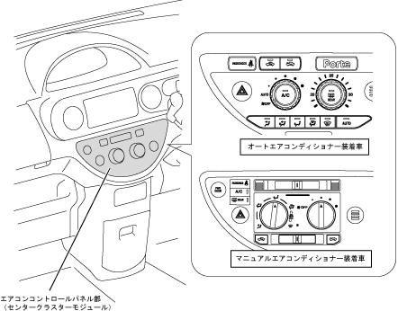

| Air conditioning control panel |
| ● |
A dedicated aircon control panel for each manual and an auto -air conditioner installed was adopted and incorporated into the center cluster module in the instrument panel.
|
| ● |
A large dial switch with excellent operability for cars with manuals and auto -air conditioners, and for cars equipped with auto -air conditioner, push -type rear winddodefgar switches in the temperature setting dial, switching in the blower dial.Has a push -type air conditioner switch.
|
| ● |
An auto -air computer computer that automatically controls air conditioning is incorporated at the back of the air conditioner control panel for cars with auto air conditioner.
|
|  |